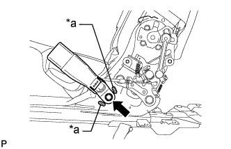

ЗАМОК РЕМНЯ БЕЗОПАСНОСТИ ЗАДНЕГО СИДЕНЬЯ № 1 В СБОРЕ (выдвижное сиденье раздельного типа 60/40 с функцией облегчения посадки "Walk-in" с правой стороны) > УСТАНОВКА |
| 1. УСТАНОВИТЕ ЗАМОК РЕМНЯ БЕЗОПАСНОСТИ ПРАВОГО ЗАДНЕГО СИДЕНЬЯ № 1 В СБОРЕ |
|  |
Установите замок ремня безопасности и закрепите его болтом.
| *a | Выступающая часть |
| 2. УСТАНОВИТЕ МОЛДИНГ ПОДУШКИ ПРАВОГО ЗАДНЕГО СИДЕНЬЯ |
Введите в зацепление направляющую и 3 захвата, чтобы установить молдинг.
Заверните винт.
| 3. УСТАНОВИТЕ ПРАВОЕ ЗАДНЕЕ СИДЕНЬЕ В СБОРЕ |
Установите правое заднее сиденье в сборе (Нажмите здесь).